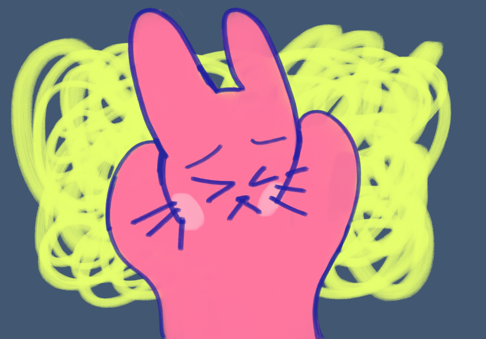
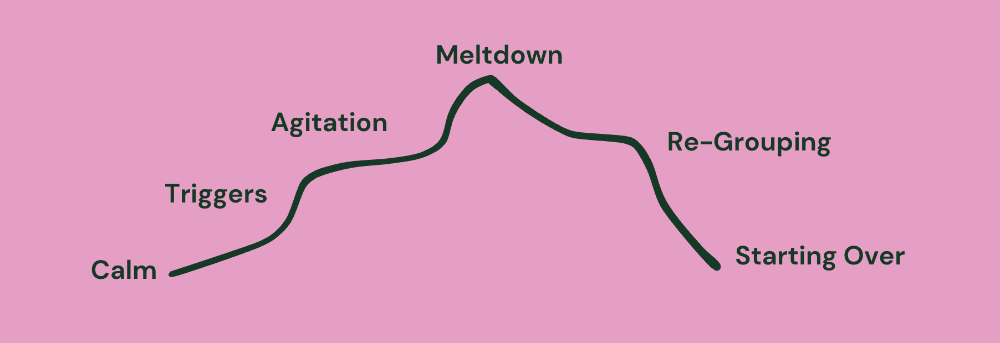

#1: Calm
Individual is regulated and feels safe. Individual is able to communicate effectively.

A meltdown occurs when someone with ASD feels extremely overwhelmed and temporarily loses control of their behaviour. This can be shown through verbal outbursts (shouting, screaming, crying), physical actions (kicking, lashing out, biting), or a combination of both.
Nope. Tantrums happen deliberately, when we know what we want to obtain and/or when we want to avoid something.
A meltdown is not a result of bad or naughty behaviour. When a person with ASD is overwhelmed, their condition makes it hard for them to express it in any other way.
Reference:
St. Andrew’s Autism Centre. “Managing Meltdowns: How Can I Help?,” July 13, 2023. https://www.saac.org.sg/managing-meltdowns/.
Meltdowns are involuntary reactions to getting triggered by events such as being anxious, stressed or doing something out of the ordinary routine, etc. Meltdowns continue until the individual experiencing it becomes calm and feels safe.
A meltdown experienced by a person with ASD can be described as the following:

Individual is regulated and feels safe. Individual is able to communicate effectively.